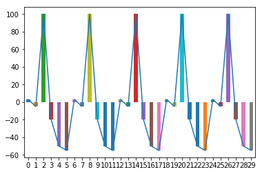
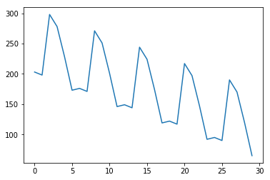
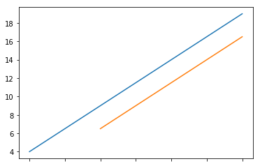

Pandas数据运算_ 拓展
import numpy as np
import pandas as pd
import matplotlib.pyplot as plt
算数运算法则
根据行列索引,补齐运算(不同索引不运算,行列索引相同才运算)
补齐时默认填充NaN空值
二维和一维,一维和0维之间采用广播运算(低维元素与每一个高维元素运算)
采用 +-*/符号的二元运算会产生新的对象
a = pd.DataFrame(np.arange(12).reshape(3, 4))
a
| 0 | 1 | 2 | 3 | |
|---|---|---|---|---|
| 0 | 0 | 1 | 2 | 3 |
| 1 | 4 | 5 | 6 | 7 |
| 2 | 8 | 9 | 10 | 11 |
b = pd.DataFrame(np.arange(20).reshape(4, 5))
b
| 0 | 1 | 2 | 3 | 4 | |
|---|---|---|---|---|---|
| 0 | 0 | 1 | 2 | 3 | 4 |
| 1 | 5 | 6 | 7 | 8 | 9 |
| 2 | 10 | 11 | 12 | 13 | 14 |
| 3 | 15 | 16 | 17 | 18 | 19 |
# 维度相同,行列内元素个数不同的运算,自动补齐,缺项NaN
a + b
| 0 | 1 | 2 | 3 | 4 | |
|---|---|---|---|---|---|
| 0 | 0.0 | 2.0 | 4.0 | 6.0 | NaN |
| 1 | 9.0 | 11.0 | 13.0 | 15.0 | NaN |
| 2 | 18.0 | 20.0 | 22.0 | 24.0 | NaN |
| 3 | NaN | NaN | NaN | NaN | NaN |
a * b
| 0 | 1 | 2 | 3 | 4 | |
|---|---|---|---|---|---|
| 0 | 0.0 | 1.0 | 4.0 | 9.0 | NaN |
| 1 | 20.0 | 30.0 | 42.0 | 56.0 | NaN |
| 2 | 80.0 | 99.0 | 120.0 | 143.0 | NaN |
| 3 | NaN | NaN | NaN | NaN | NaN |
除了使用+-*/,也可使用方法形式,好处是可以增加可选参数
- .add(d,**argws) 类型间加法运算,可选参数
- .sub(d,**argws) 类型间减法运算,可选参数
- .mul(d,**argws) 类型间乘法运算,可选参数
- .div(d,**argws) 类型间除法运算,可选参数
a.add(b)
| 0 | 1 | 2 | 3 | 4 | |
|---|---|---|---|---|---|
| 0 | 0.0 | 2.0 | 4.0 | 6.0 | NaN |
| 1 | 9.0 | 11.0 | 13.0 | 15.0 | NaN |
| 2 | 18.0 | 20.0 | 22.0 | 24.0 | NaN |
| 3 | NaN | NaN | NaN | NaN | NaN |
b.add(a, fill_value = 100) #将a和b之间的缺失元素用100补齐并参加与运算
# 补齐缺失值后，再次参加运算
| 0 | 1 | 2 | 3 | 4 | |
|---|---|---|---|---|---|
| 0 | 0.0 | 2.0 | 4.0 | 6.0 | 104.0 |
| 1 | 9.0 | 11.0 | 13.0 | 15.0 | 109.0 |
| 2 | 18.0 | 20.0 | 22.0 | 24.0 | 114.0 |
| 3 | 115.0 | 116.0 | 117.0 | 118.0 | 119.0 |
a.mul(b, fill_value = 0)
| 0 | 1 | 2 | 3 | 4 | |
|---|---|---|---|---|---|
| 0 | 0.0 | 1.0 | 4.0 | 9.0 | 0.0 |
| 1 | 20.0 | 30.0 | 42.0 | 56.0 | 0.0 |
| 2 | 80.0 | 99.0 | 120.0 | 143.0 | 0.0 |
| 3 | 0.0 | 0.0 | 0.0 | 0.0 | 0.0 |
不同维度运算
b
| 0 | 1 | 2 | 3 | 4 | |
|---|---|---|---|---|---|
| 0 | 0 | 1 | 2 | 3 | 4 |
| 1 | 5 | 6 | 7 | 8 | 9 |
| 2 | 10 | 11 | 12 | 13 | 14 |
| 3 | 15 | 16 | 17 | 18 | 19 |
c = pd.Series(np.arange(4))
c
0 0
1 1
2 2
3 3
dtype: int32
c + 100 # 1维和 0 维 数据运算
0 100
1 101
2 102
3 103
dtype: int32
b + c
| 0 | 1 | 2 | 3 | 4 | |
|---|---|---|---|---|---|
| 0 | 0.0 | 2.0 | 4.0 | 6.0 | NaN |
| 1 | 5.0 | 7.0 | 9.0 | 11.0 | NaN |
| 2 | 10.0 | 12.0 | 14.0 | 16.0 | NaN |
| 3 | 15.0 | 17.0 | 19.0 | 21.0 | NaN |
b.add(c)
| 0 | 1 | 2 | 3 | 4 | |
|---|---|---|---|---|---|
| 0 | 0.0 | 2.0 | 4.0 | 6.0 | NaN |
| 1 | 5.0 | 7.0 | 9.0 | 11.0 | NaN |
| 2 | 10.0 | 12.0 | 14.0 | 16.0 | NaN |
| 3 | 15.0 | 17.0 | 19.0 | 21.0 | NaN |
默认按每行的列运算，axis=0按每列的行运算
b.add(c,axis=0) #默认按每行的列运算，axis=0按每列的行运算
| 0 | 1 | 2 | 3 | 4 | |
|---|---|---|---|---|---|
| 0 | 0 | 1 | 2 | 3 | 4 |
| 1 | 6 | 7 | 8 | 9 | 10 |
| 2 | 12 | 13 | 14 | 15 | 16 |
| 3 | 18 | 19 | 20 | 21 | 22 |
比较运算法则
比较运算只能比较相同索引的元素,不进行补齐(尺寸不同会报错)
二维和一维/一维和零维间为广播运算
采用>< >= <= == !=等符号进行的二元运算产生布尔对象
a
| 0 | 1 | 2 | 3 | |
|---|---|---|---|---|
| 0 | 0 | 1 | 2 | 3 |
| 1 | 4 | 5 | 6 | 7 |
| 2 | 8 | 9 | 10 | 11 |
d = pd.DataFrame(np.arange(12, 0, -1).reshape(3, 4))
d
| 0 | 1 | 2 | 3 | |
|---|---|---|---|---|
| 0 | 12 | 11 | 10 | 9 |
| 1 | 8 | 7 | 6 | 5 |
| 2 | 4 | 3 | 2 | 1 |
a > d
| 0 | 1 | 2 | 3 | |
|---|---|---|---|---|
| 0 | False | False | False | False |
| 1 | False | False | False | True |
| 2 | True | True | True | True |
a == d
| 0 | 1 | 2 | 3 | |
|---|---|---|---|---|
| 0 | False | False | False | False |
| 1 | False | False | True | False |
| 2 | False | False | False | False |
a < c
| 0 | 1 | 2 | 3 | |
|---|---|---|---|---|
| 0 | False | False | False | False |
| 1 | False | False | False | False |
| 2 | False | False | False | False |
根据索引对齐操作
Series类型在运算中会自动对齐不同索引的数据
ndarray基于维度运算，Series基于索引运算，更精确不易出错
e = pd.Series([1,2,3], ['c','d','e'])
e
c 1
d 2
e 3
dtype: int64
f = pd.Series([9,8,7,6], ['a','b','c','d'])
f
a 9
b 8
c 7
d 6
dtype: int64
结果为两个值的并集,相加时索引对齐加值,索引不对齐的没值,加完也没值
e + f #
a NaN
b NaN
c 8.0
d 8.0
e NaN
dtype: float64
对齐
操作不同的维度需要先对齐,Pandas会沿着指定维度执行:
- 这里对齐维度指的是对齐index
- shift(2)指沿着时间轴将数据顺移两位
- 可用于金融数据分析中计算交易盈亏
dates = pd.date_range('20130101', periods = 10)
g = pd.Series([1,3,5,np.nan,6,8,9,10,11,12], index = dates)
g
2013-01-01 1.0
2013-01-02 3.0
2013-01-03 5.0
2013-01-04 NaN
2013-01-05 6.0
2013-01-06 8.0
2013-01-07 9.0
2013-01-08 10.0
2013-01-09 11.0
2013-01-10 12.0
Freq: D, dtype: float64
g.shift(2)
2013-01-01 NaN
2013-01-02 NaN
2013-01-03 1.0
2013-01-04 3.0
2013-01-05 5.0
2013-01-06 NaN
2013-01-07 6.0
2013-01-08 8.0
2013-01-09 9.0
2013-01-10 10.0
Freq: D, dtype: float64
模拟计算单笔交易盈利点数
2列，0列卖出价格，1列买入价格
b2 = b.loc[:,:1]
b2
| 0 | 1 | |
|---|---|---|
| 0 | 0 | 1 |
| 1 | 5 | 6 |
| 2 | 10 | 11 |
| 3 | 15 | 16 |
b2[0] - b2[1]
0 -1
1 -1
2 -1
3 -1
dtype: int32
对应卖出和买入价格，计算每笔交易盈利
b2[0] - b2[1].shift(1)
0 NaN
1 4.0
2 4.0
3 4.0
dtype: float64
累计运算
- 对序列的前1-n个数累计运算
可减少for循环的使用
可用于金融数据分析中的计算累计盈亏
函数 解释
.cumsum() 依次给出前1/2/.../n个数的和
.cumprod() 依次给出前1/2/.../n个数的积
.cummax() 依次给出前1/2/.../n个数的最大值
.cummin() 依次给出前1/2/.../n个数的最小值
h = pd.DataFrame(np.arange(20).reshape(4,5),index=['c','a','d','b'])
h
| 0 | 1 | 2 | 3 | 4 | |
|---|---|---|---|---|---|
| c | 0 | 1 | 2 | 3 | 4 |
| a | 5 | 6 | 7 | 8 | 9 |
| d | 10 | 11 | 12 | 13 | 14 |
| b | 15 | 16 | 17 | 18 | 19 |
h.sum() # 求和，默认按行（每一列的每行数据）计算
0 30
1 34
2 38
3 42
4 46
dtype: int64
h.sum(axis=1) #按列运算，一行的每一列
c 10
a 35
d 60
b 85
dtype: int64
h.cumsum() #累加
| 0 | 1 | 2 | 3 | 4 | |
|---|---|---|---|---|---|
| c | 0 | 1 | 2 | 3 | 4 |
| a | 5 | 7 | 9 | 11 | 13 |
| d | 15 | 18 | 21 | 24 | 27 |
| b | 30 | 34 | 38 | 42 | 46 |
h.cummin()
| 0 | 1 | 2 | 3 | 4 | |
|---|---|---|---|---|---|
| c | 0 | 1 | 2 | 3 | 4 |
| a | 0 | 1 | 2 | 3 | 4 |
| d | 0 | 1 | 2 | 3 | 4 |
| b | 0 | 1 | 2 | 3 | 4 |
h.cummax()
| 0 | 1 | 2 | 3 | 4 | |
|---|---|---|---|---|---|
| c | 0 | 1 | 2 | 3 | 4 |
| a | 5 | 6 | 7 | 8 | 9 |
| d | 10 | 11 | 12 | 13 | 14 |
| b | 15 | 16 | 17 | 18 | 19 |
h.cumprod()
| 0 | 1 | 2 | 3 | 4 | |
|---|---|---|---|---|---|
| c | 0 | 1 | 2 | 3 | 4 |
| a | 0 | 6 | 14 | 24 | 36 |
| d | 0 | 66 | 168 | 312 | 504 |
| b | 0 | 1056 | 2856 | 5616 | 9576 |
金融方向应用：计算累计盈亏
# 每笔交易盈亏
x = pd.Series([3, -5, 100, -20, -50, -55, 3, -5, 100, -20, -50, -55,3, -5, 100, -20, -50, -55,3, -5, 100, -20, -50, -55,3, -5, 100, -20, -50, -55,])
x
0 3
1 -5
2 100
3 -20
4 -50
5 -55
6 3
7 -5
8 100
9 -20
10 -50
11 -55
12 3
13 -5
14 100
15 -20
16 -50
17 -55
18 3
19 -5
20 100
21 -20
22 -50
23 -55
24 3
25 -5
26 100
27 -20
28 -50
29 -55
dtype: int64
求总盈亏
x.sum()
-135
查看盈亏的趋势
x.plot.bar()
x.plot() #这是每笔盈亏图，不是历史总盈亏趋势图
<matplotlib.axes._subplots.AxesSubplot at 0x66665f8>

x.cumsum() + 200 #成本价 200
0 203
1 198
2 298
3 278
4 228
5 173
6 176
7 171
8 271
9 251
10 201
11 146
12 149
13 144
14 244
15 224
16 174
17 119
18 122
19 117
20 217
21 197
22 147
23 92
24 95
25 90
26 190
27 170
28 120
29 65
dtype: int64
(x.cumsum() + 200).plot()
<matplotlib.axes._subplots.AxesSubplot at 0x91ac908>

滚动计算(窗口计算)
可用于金融数据分析中随时间移动指标计算
h
| 0 | 1 | 2 | 3 | 4 | |
|---|---|---|---|---|---|
| c | 0 | 1 | 2 | 3 | 4 |
| a | 5 | 6 | 7 | 8 | 9 |
| d | 10 | 11 | 12 | 13 | 14 |
| b | 15 | 16 | 17 | 18 | 19 |
h.sum()
0 30
1 34
2 38
3 42
4 46
dtype: int64
h.rolling(2).sum()
| 0 | 1 | 2 | 3 | 4 | |
|---|---|---|---|---|---|
| c | NaN | NaN | NaN | NaN | NaN |
| a | 5.0 | 7.0 | 9.0 | 11.0 | 13.0 |
| d | 15.0 | 17.0 | 19.0 | 21.0 | 23.0 |
| b | 25.0 | 27.0 | 29.0 | 31.0 | 33.0 |
h.rolling(3).sum()
# 每 3 项 求和， 那么前两项 的前面不够 3 项 求和，那么他们就为 NaN。
| 0 | 1 | 2 | 3 | 4 | |
|---|---|---|---|---|---|
| c | NaN | NaN | NaN | NaN | NaN |
| a | NaN | NaN | NaN | NaN | NaN |
| d | 15.0 | 18.0 | 21.0 | 24.0 | 27.0 |
| b | 30.0 | 33.0 | 36.0 | 39.0 | 42.0 |
MACD移动平均线
h[4]
c 4
a 9
d 14
b 19
Name: 4, dtype: int32
h[4].rolling(2).mean()
c NaN
a 6.5
d 11.5
b 16.5
Name: 4, dtype: float64
h[4].plot() #原始价格线
h[4].rolling(2).mean().plot() #移动平均线
<matplotlib.axes._subplots.AxesSubplot at 0x9491dd8>
